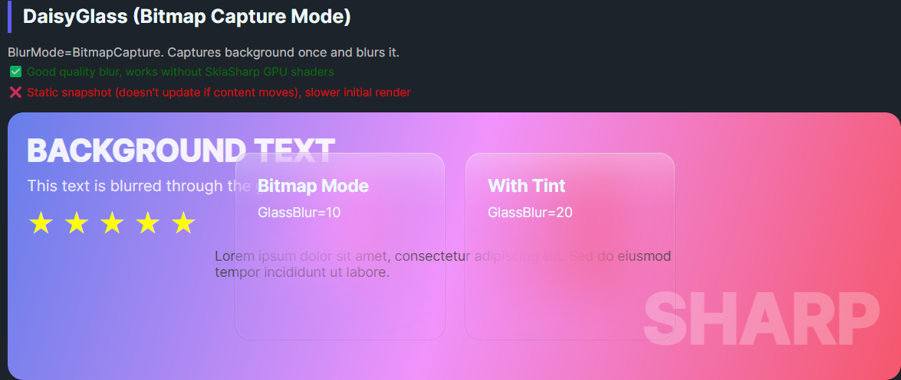
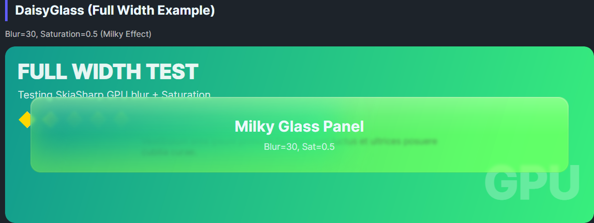
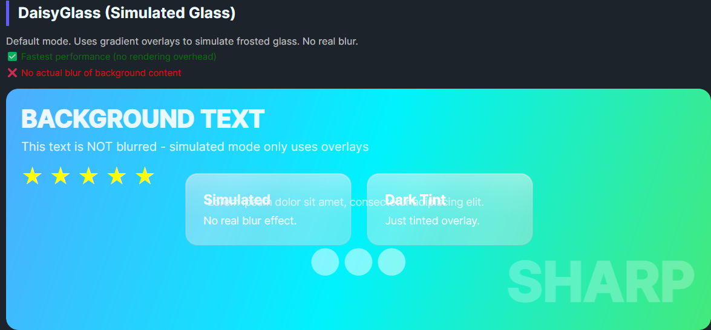
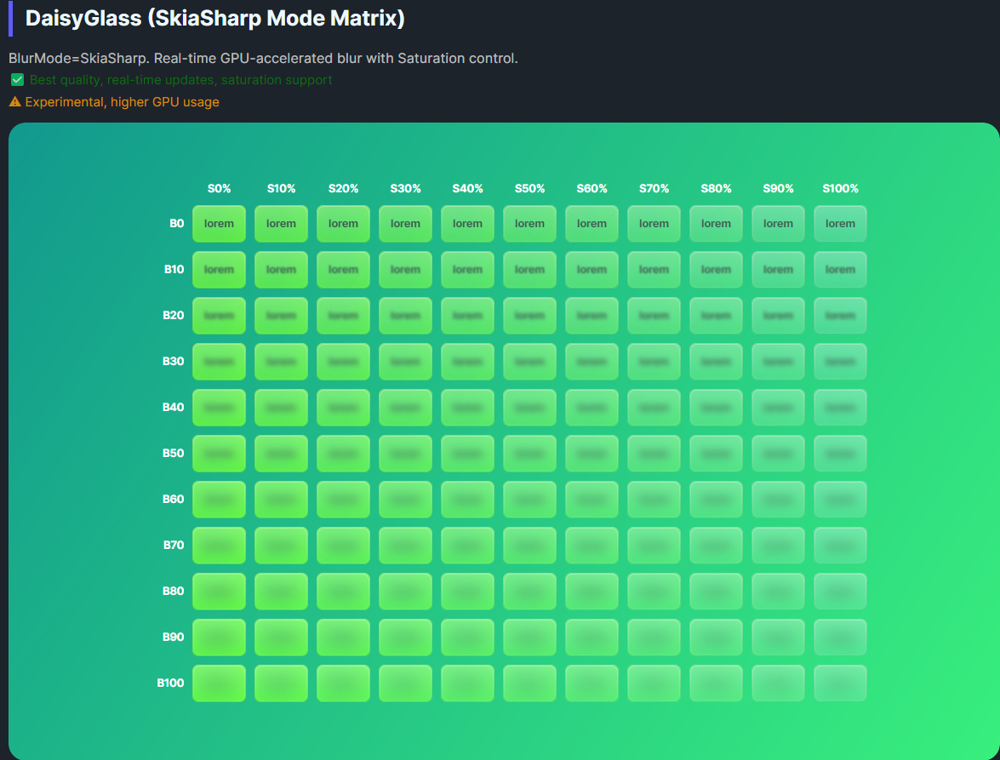

DaisyGlass is a frosted-glass container with multiple blur strategies: simulated gradients, bitmap capture, or SkiaSharp GPU blur. It exposes tint/opacity controls, saturation, reflection parameters, and a toggle for real backdrop capture. Use it to create translucent panels over imagery or colorful backgrounds.
| Mode | Description |
|---|---|
Simulated |
No real blur; uses layered gradients/textures for a lightweight glass look. |
BitmapCapture (default) |
Captures underlying content once and blurs it; good balance of quality/perf. |
SkiaSharp |
GPU blur via Skia; more real-time but experimental. |
| Property | Description |
|---|---|
EnableBackdropBlur (bool) |
Enables real capture/blur; simulated layers are always rendered. |
BlurMode |
Chooses blur pipeline (Simulated/BitmapCapture/SkiaSharp). |
GlassBlur |
Blur radius/strength. |
GlassOpacity |
Base tint opacity (overlay). |
GlassTint / GlassTintOpacity |
Tint color and intensity. |
GlassBorderOpacity |
Subtle outline opacity. |
GlassReflectDegree / GlassReflectOpacity |
Control the reflection effect. |
GlassTextShadowOpacity |
Shadow for text content. |
GlassSaturation |
Saturation of blurred background (0 = grayscale). |
BlurredBackground (read-only) |
Captured/blurred image when backdrop blur is enabled. |
<!-- Lightweight simulated glass -->
<controls:DaisyGlass>
<StackPanel Padding="16" Spacing="8">
<TextBlock Text="Simulated Glass" FontWeight="Bold" />
<TextBlock Text="No real blur, just gradients." />
</StackPanel>
</controls:DaisyGlass>
<!-- Backdrop blur with custom tint -->
<controls:DaisyGlass EnableBackdropBlur="True"
BlurMode="BitmapCapture"
GlassBlur="30"
GlassTint="#FFFFFF"
GlassTintOpacity="0.35">
<StackPanel Padding="16" Spacing="8">
<TextBlock Text="Blurred Panel" FontWeight="Bold" />
<TextBlock Text="Captures background once and blurs it." />
</StackPanel>
</controls:DaisyGlass>
<!-- SkiaSharp live blur -->
<controls:DaisyGlass EnableBackdropBlur="True"
BlurMode="SkiaSharp"
GlassBlur="40"
GlassSaturation="0.9">
<TextBlock Text="Live GPU blur" Margin="16,12" />
</controls:DaisyGlass>EnableBackdropBlur=False (default) for best performance; turn it on only where blur is critical.GlassBlur moderate (20–40) to avoid heavy GPU/CPU load; higher values can be expensive.RefreshBackdrop() after major layout/content changes when using capture mode.Simulated on low-powered devices; use SkiaSharp only when GPU acceleration is available and acceptable.